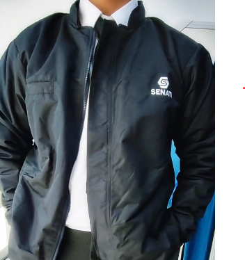

Clima del Día: Frío Senatino



Hoy se presenta un día frío en SENATI. Para mantener el confort y la formalidad, te recomendamos usar el uniforme completo con énfasis en el abrigo: casaca institucional SENATI, camisa blanca, corbata institucional, pantalón de vestir oscuro y zapatos formales negros. Esta combinación te mantendrá abrigado y profesional durante toda tu jornada académica.
Recomendaciones para este día:
Volver al inicio
- La temperatura está baja, la casaca institucional SENATI es esencial para mantener tu temperatura corporal.
- Considera usar prendas térmicas discretas debajo del uniforme para mayor protección contra el frío.
- Mantén tu uniforme en excelente estado, especialmente la casaca que será tu principal protección.
- ara los traslados largos, complementa con accesorios abrigadores como guantes o bufanda en colores sobrios.
- Mantente hidratado con bebidas tibias, te ayudarán a regular tu temperatura corporal.